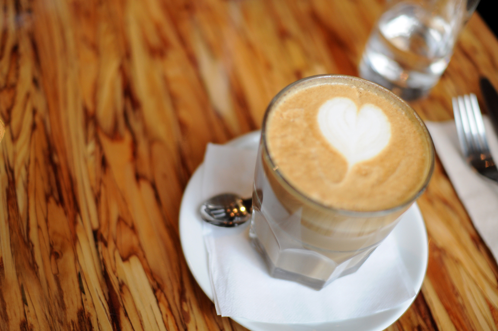

Coffee Menu
I got into roasting probably the same way most people do — I had a bag of really good coffee somewhere and thought, how hard can this be? Turns out, pretty hard, but also genuinely fun to figure out. These days we do small-batch roasting in-house, which just means I'm back there with a roaster and a notebook trying to nail down a profile I liked last week. We source from importers I've actually talked to, people who care about where the beans come from and how the farmers are treated. That stuff matters to me, even if it doesn't come up every time someone orders a latte.
The menu is pretty straightforward — espresso drinks, a few brewed options, cold brew when it's warm out. We rotate single-origins on the pour-over when I find something worth sharing. I'm not trying to make the menu intimidating. If you want a vanilla latte, I'll make you a great one. If you want to geek out on processing methods and water temperature, I'm into that too. Both conversations happen here regularly.
Honestly, my favorite thing is when someone who's never thought much about coffee tries something off the pour-over rotation and just kind of pauses for a second. That reaction never gets old. We're not here to convert anyone — just to make something worth drinking and maybe spark a little curiosity. Come in, tell me what you usually like, and we'll go from there.
Espresso Drinks
- House Espresso — $3.00
- Americano — $3.50
- Cappuccino — $4.50
- Oat Milk Latte — $5.25
- Vanilla Latte — $5.50
- Caramel Macchiato — $5.75
- Mocha — $5.50
- Dirty Chai Latte — $5.75
Brewed & Cold
- Drip Coffee — $2.50
- Cold Brew — $4.50
- Nitro Cold Brew — $5.25
- Seasonal Pour-Over — $5.00
- Iced Matcha Latte — $5.50
Non-Coffee
- Hot Chocolate — $4.00
- Chai Tea Latte — $4.75
- Steamed Milk & Honey — $3.50
- Fresh Lemonade — $3.50